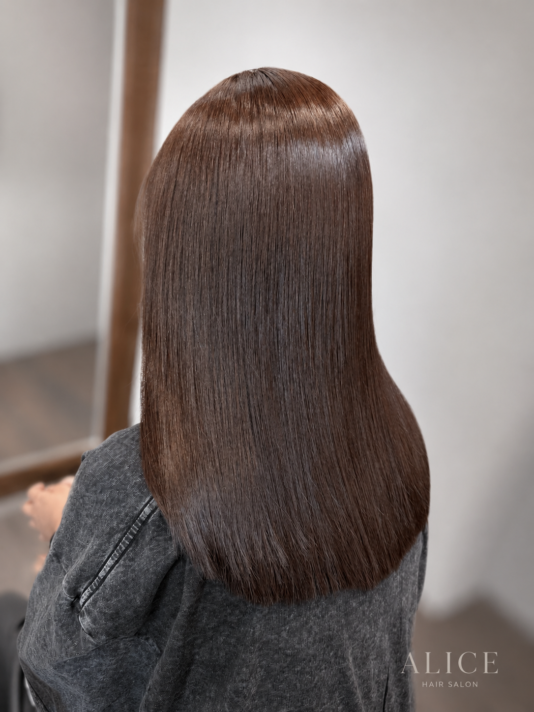
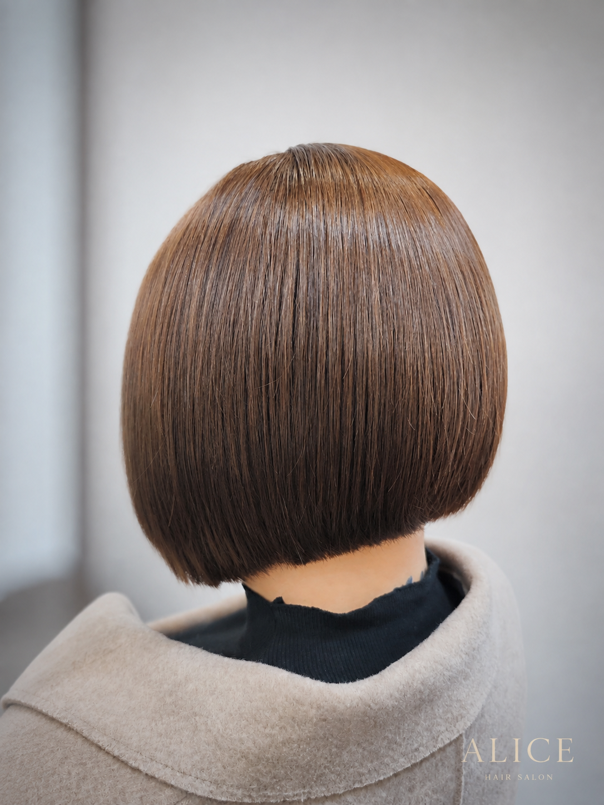
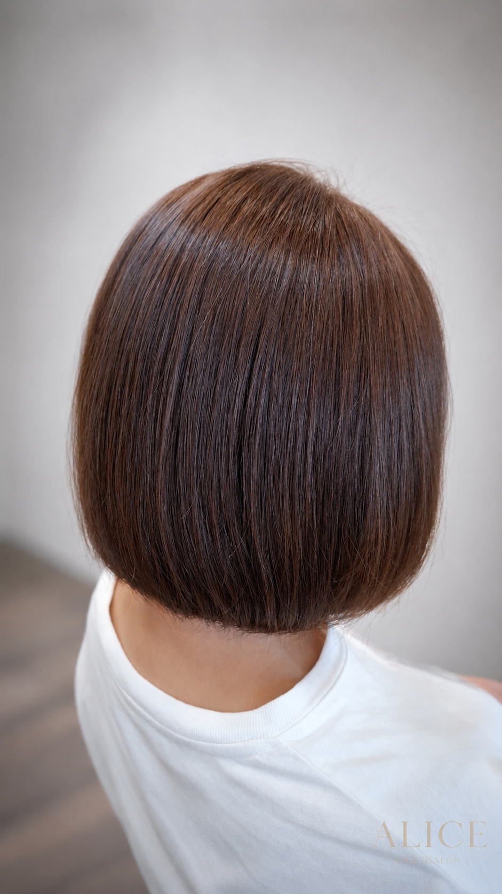
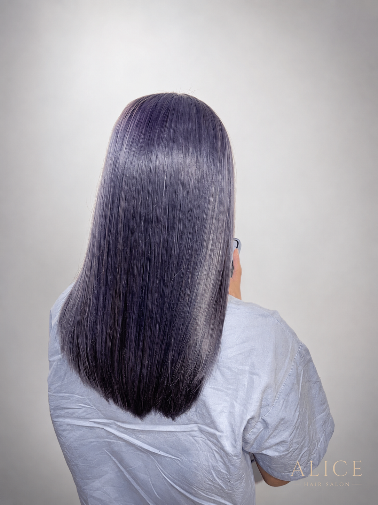
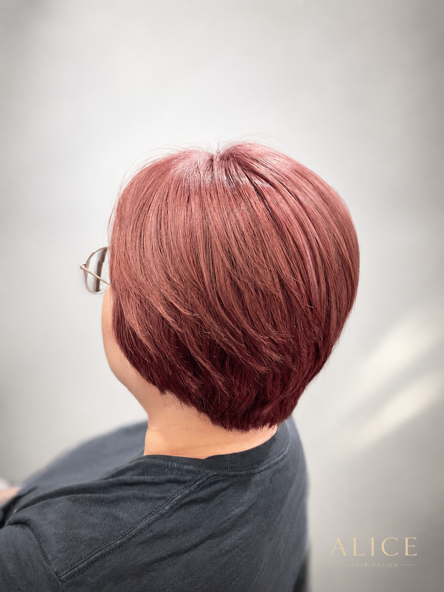
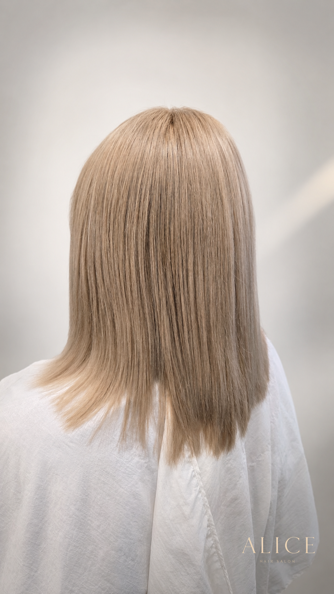

目前髮況與底色
確認自然髮、既有染色、髮尾累積色素與乾燥區域，讓溝通從真實起點開始。
Nankan Hair Color
從自然棕調、白髮銜接到想嘗試的色彩變化，ALICE 會先確認目前髮況、過往染燙紀錄與想維持的頻率，再規劃能安心帶回日常的染髮方向。
本頁案例均為 ALICE 實際完成後的原始作品紀錄；未以 AI 修改髮色、髮況或完成效果。不同裝置與光線可能影響螢幕顯色，實際方案仍以現場評估為準。

Color Planning
比起只看一張範例圖，我們更重視目前底色、白髮比例、褪色速度與你期待的整理節奏。
確認自然髮、既有染色、髮尾累積色素與乾燥區域，讓溝通從真實起點開始。
討論想呈現的冷暖、明暗、透明感與白髮融合方向，而非只以色名決定服務。
依補染頻率、洗護習慣與可接受的褪色變化，安排更適合日常的染髮計畫。
Real Color Cases
六張完成作品採一致的照片容器與文字卡規格，讓你更專注比較不同長度、色調與整體氛圍。
案例文字僅描述照片可見的色彩印象與造型輪廓，不將單一作品視為所有人都能複製的效果。染髮前仍會依髮況、過去染燙紀錄及現場評估提出建議。
長髮呈現暖霧深可可棕的沉穩光澤，保留自然髮面的厚度與日常容易搭配的質感。

短鮑伯呈現霧感米棕的柔和色彩，讓髮尾線條與整體輪廓看起來更輕盈。

短髮呈現玫瑰可可棕的溫潤色澤，在光線下襯托乾淨的髮型結構。

中長髮呈現霧感薰衣草灰紫的柔和色彩，視覺上保有細緻光澤與長度層次。

短髮呈現霧感玫瑰粉棕的柔和色彩，在不同角度下保有細緻的粉棕印象。

長髮呈現淺奶茶金的明亮柔和色澤，讓髮絲線條在自然光下更顯輕盈。
Actual Service Records
點開查看該次服務的內容、最終實收、時間、髮況評估與染後照顧方式。
以下為個別顧客當次服務的真實紀錄。髮長、髮量、既有染燙與操作難度不同，後續服務仍會以現場評估與報價為準。
設計重點：以暖棕平衡膚色，讓整體視覺更柔和。
染後照顧：使用染後專用洗髮精；每週一次居家護髮，每月一次沙龍深層護髮。
設計重點：髮色與短鮑伯剪裁一起規劃，以柔和棕色強調頭型圓弧、髮面整齊度與下擺線條。
染後照顧：使用染後專用洗髮精；每週一次居家護髮，每月一次沙龍深層護髮。
設計重點：以中深棕色帶出圓弧堆積短髮的明暗面與包覆感，讓頭型輪廓更清楚。
染後照顧：使用染後專用洗髮精；每週一次居家護髮，每月一次沙龍深層護髮。
設計重點：以乾淨底色融合灰霧感與薰衣草紫調，保留低彩度、柔和透明的冷紫色澤。
染後照顧：使用染後專用洗髮精；每週兩次居家護髮，每月兩次沙龍深層護髮。
設計重點：以明亮的 7.5 度底色融合玫瑰粉棕，呈現低彩度、柔和微透的粉棕色澤。
染後照顧：使用染後專用洗髮精；每週兩次居家護髮，每月兩次沙龍深層護髮。
設計重點：保留頭頂較髮尾深一點的自然層次，髮尾在受光下偏淺米色，讓高明度髮色不顯扁平，也讓新生髮銜接較柔和。
染後照顧：使用染後專用洗髮精；每週兩次居家護髮，每月兩次沙龍深層護髮。
Color Service
以下為常見染髮服務參考價，實際內容仍會依髮長、髮量、底色與設計難度調整。
| 服務 | 參考價格 | 說明 |
|---|---|---|
| 商業色染髮／白髮染｜短髮 | NT$2,000 | 含頭皮隔離、一般養護與洗髮。 |
| 商業色染髮／白髮染｜中長髮 | NT$2,400 | 會依目前底色、白髮比例與髮量評估。 |
| 商業色染髮／白髮染｜長髮 | NT$2,800 | 會依髮長、髮況與想維持的效果討論。 |
| 補染 Retouch｜2 公分內 | NT$1,800 | 適合希望維持髮根色彩銜接的需求。 |
| 特殊設計染、片染、挑染、線條染 | 諮詢報價 | 需先確認底色、操作範圍與可達成程度。 |
Before Booking
提供得越完整，設計師越能在預約前協助判斷適合的服務時間與方向。
包含居家染、漂髮、挑染、黑染、縮毛矯正與最近一次染髮時間。
自然光下的正面、側面或背面照片，有助於初步理解長度、底色與褪色情況。
可提供理想參考圖，也可說明不希望太亮、太紅、太冷或太頻繁補染等需求。
FAQ
先了解會影響判斷的條件，到店時能更有效率地溝通。
案例可作為溝通方向，但每個人的底色、白髮比例、過去染燙紀錄與髮況不同。設計師會依現況說明可達成程度與更適合的調整方式。
除了想要的色調，還需要一起評估白髮比例、新生髮對比、補染頻率與髮尾累積色素，才能找到較適合日常維持的做法。
一般建議至少 48 小時後再洗頭，並依髮況使用溫和、適合染後髮質的洗護產品；實際照護方式可在完成服務後向設計師確認。